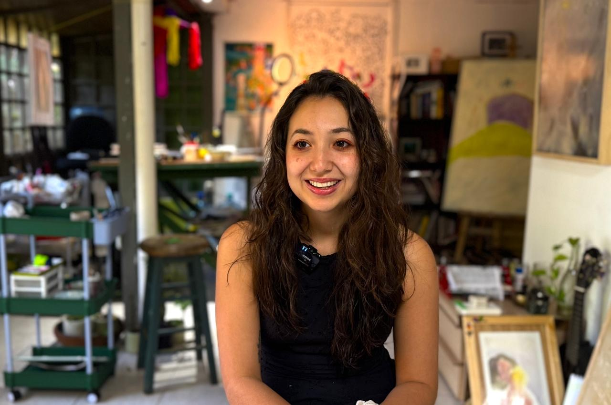

Valeria Cáceres, érase un pez azul
Valeria Cáceres, conocida como Érase un pez azul, es una artista visual, ilustradora y educadora italo-salvadoreña cuya práctica se sitúa entre el libro de artista, la investigación material y la narrativa visual contemporánea.
Su trabajo explora la relación entre memoria, naturaleza y espiritualidad a través de procesos editoriales artesanales que integran ilustración, papel hecho a mano, pigmentos naturales, encuadernación experimental y storytelling visual.
Entiende el libro como un objeto vivo y sensible: un espacio donde imagen, materia y relato se transforman en experiencia poética. Su investigación artística combina técnicas tradicionales y experimentales inspiradas tanto en prácticas artesanales latinoamericanas como en la estética editorial japonesa.
Además de su práctica personal, desarrolla talleres y experiencias colectivas enfocadas en procesos manuales, exploración creativa y conexión emocional a través del arte.
Actualmente vive y trabaja en El Salvador.
